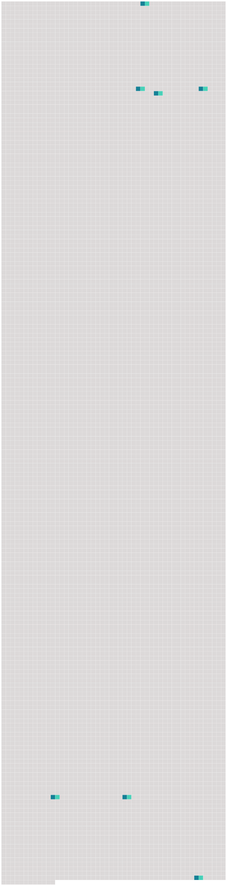

Longueur nb maillons : 7 mentions |
 |
La princesse la trouva si jolie, qu’ elle voulut la mener avec elle à la promenade, et tout le monde cherchait à deviner quelle était cette charmante personne que [l’ on] voyait à la portière de son carrosserie soir, on ne parla que de Mme de Hautefort, et il ne fut pas difficile d’ engager la reine-mère, Marie de Médicis, à la prendre parmi ses filles d’ honneur. [30 phrases] [L’ on] disposoit toujours la chasse du côté de quelques belles maisons, où [l’ on] trouvoit de grandes collations, et au retour le roi se mettoit dans son carrosse avec Mlle de Hautefort et moi. [1 phrases] [L’ on] avoit régulièrement trois fois la semaine le divertissement de la musique …… [182 phrases] Le roi lui dit que son exil n’ étoit que pour quinze jours, qu’ il l’ avoit accordé avec une violence extrême aux raisons d’ état, à cause des intrigues qui troubloient toute la cour, et que [l’ on] faisoit sous son nom, qu’ elle le devoit plaindre de la violence que [l’ on] avoit faite à son inclination et de la douleur qu’ il en souffriroit pendant ce temps. [17 phrases] Cependant on lui a commandé de se retirer avec 4, 000 écus, qu’ il faut qu’ elle emploie à payer ses dettes : on parle de la renvoyer de la même sorte qu’ on renverroit Michelette, si [l’ on] s’ étoit avisé des grandes cabales qu’ elle fait dans la cour aussi bien que nous …… |
 |
La ressource peut être téléchargée sur la page Ortolang
Si vous avez des questions ou vous voyez des erreurs, merci d'envoyer un mail à silvia.federzoni89@gmail.com
Site développé par S. Federzoni (contact)